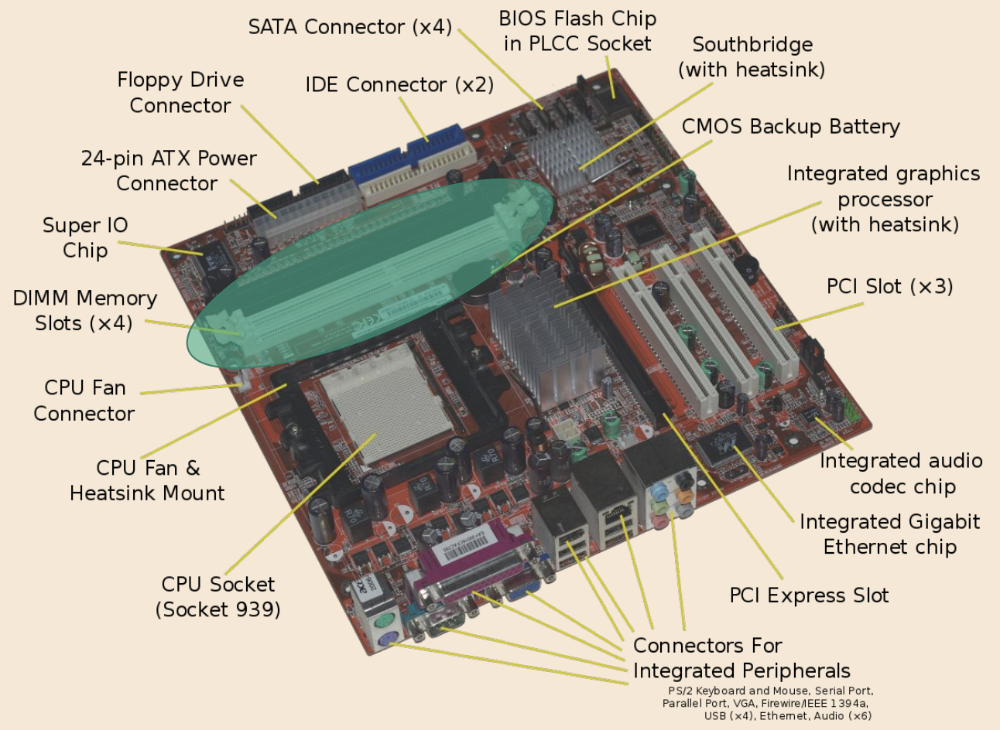
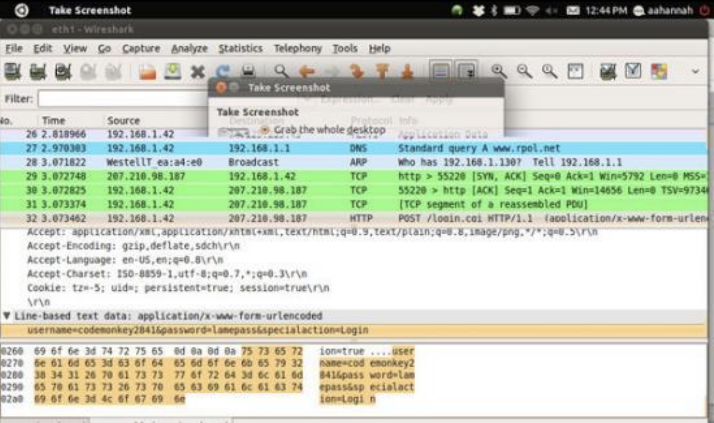

讲座 5
- Hardware
- Addresses
- Volatility
- Processors
- Motherboards
- Hard Disk Drives
- Protecting Client Data
- ABA Formal Opinion No. 477R (五月 2017)
- ABA Formal Opinion No. 483 (十月 2018)
Hardware
-
Random Access 内存, or RAM, is a rough translation of how much computing power the machine has.
-
There are a series of caches in our machine, each of which is smaller in size than the 上一页 one.
-
RAM > Level 3 cache > Level 2 cache > Level 1 cache > CPU 内存 (Central Processing Unit 内存)
-
The caches are faster as they get closer to the processor.
-
The CPU is the most expensive part, the caches 较少 expensive, RAM even 较少 expensive, and hard disk space the least.
-
Information manipulation occurs in the processor.
-
-
Every file lives on a disk drive, whether it is a hard disk drive (HDD) or solid-state drive (SSD).
-
Hard disk drives are simply storage spaces on our machine.
-
Since hard disk drives are just storage, we must move the data to RAM before doing any processing or manipulation. Afterwards, all of that data will be moved 返回 to the hard disk.
-
Addresses
-
Data types each have different sizes.
Data Type Size (in bytes) int 4 char 1 float 4 double 8 long 8 -
内存 is a large array of 8-bit wide bytes. Thus, we have random access, the ability to jump to different addresses.
-
Each 地点 in 内存 has an address.
-
A 32-bit system is able to process addresses up to 32 bits in length, and a 64-bit system is able to process addresses up to 64 bits in length.
-
Using virtual 内存, 32-bit systems can use 更多 than 4GB of RAM.
-
A 64-bit system has many 更多 possible 内存 cells. Thus, with a 64-bit system, we can have very large amounts of RAM, which would give us 更多 space to store information, speeding up our computer’s operations.
- Having 更多 RAM speeds up the computer’s operations because when the RAM is full (too much information is being processed), the computer will have to continuously send data 返回 to the hard drive, making such data 更多 difficult to access.
-
Hexadecimal
-
When referring to 内存 addresses, we use hexadecimal notation, which is the base 16 system. While a binary 32-bit address might look something like this:
00101001 11010110 00101110 01010111, a hexadecimal 32-bit address would instead look something like this:0x29D62E57.-
Four binary digits can be expressed with a single hex digit.
-
The
0xis included in the front to denote that this value is in hexadecimal.
-
-
Using GDB, a debugging 工具 for debugging problems in a low level code, we can see some 内存 addresses.
Breakpoint 1, 0x004005af in main () (gdb) i r eax 0xb7fb9dbc -1208246852 ecx 0xbffff340 -1073745088 edx 0xbffff364 -1073745052 ebx 0x0 0 esp 0xbffff320 0xbffff320 ebp 0xbffff328 0xbffff328-
eax,ecx, …, andebpare registers, very small units 关闭 to the 内存 that store data. -
下一页 to the registers are hexadecimal 内存 addresses. 下一页 to those hexadecimal 内存 addresses, we’ve translated the hexadecimal to base 10.
-
-
This table shows the conversion of decimal, or base 10, numbers to binary and hexadecimal.
Decimal Binary Hex Decimal Binary Hex 0 0000 0x0 8 1000 0x8 1 0001 0x1 9 1001 0x9 2 0010 0x2 10 1010 0xA 3 0011 0x3 11 1011 0xB 4 0100 0x4 12 1100 0xC 5 0101 0x5 13 1101 0xD 6 0110 0x6 14 1110 0xE 7 0111 0x7 15 1111 0xF - 笔记 that 1010 = A16, 1110 = B16, 1210 = C16, 1310 = D16, 1410 = E16, and 1510 = F16 where the subscript represents the base system being used.
-
When converting a binary number such as
00101010into hexadecimal, we first split the number into groups of four. We get0010and1010, which is2andArespectively. Thus,00101010in binary is0x2A. -
Now we’ll convert a hexadecimal number to decimal.
-
笔记 that in decimal, when we expand a number like
123, we have102 101 100 1 2 3 This gives us 1 x (102) + 2 x (101) + 3 x (100).
-
Similarly, we can expand
0x2A.161 160 2 A This gives us 2 x (161) + A x (160) = 32 + 10 = 42.
-
Volatility
-
内存, other than hard disk space, on our computers are volatile, meaning that the 内存 is constantly changing.
-
Volatile 内存 requires power; after a limited amount of 时间 with no power, the electrical charge dissipates, and the “state” is lost, whereby all of the data in RAM has turned into zeroes.
Processors
-
A 32-bit processor can only work with 32 bits, or 4 bytes, at a 时间. It, however, can do 2 to 3 billion operations per second.
-
Since these processors can only work with 4 bytes at a 时间, the caches have to keep moving data to and from the processors very quickly.
-
When referring to a processor’s speed, the number of gigahertz refers to how many operations the processor can do per second.
-
Having multiple cores means that there are multiple of these 32-bit processors that can work with 4 bytes at a 时间.
Motherboards
-
Shown here is a stick of RAM, a green chip with gold connector pins that can be plugged into the motherboard. Information is stored here and flows to and from the processor.

-
Shown here is the CPU. Typically, above the CPU, a fan and a heat sink will be mounted on it to keep the CPU from meltdown while it does the two to three billion operations per second.

-
Shown here is a GPU, or graphical processing unit. These are specialized to do operations that simplify the interpretation of graphics. Typically, a fan and a heat sink will also be mounted on the GPU.

-
Shown here are SATA connectors, which connect hard drives to our machine to extend the storage capacity.

-
All these parts are in our computers, laptops, and phones, albeit scaled down.
Hard Disk Drives
-
Hard disk space is non-volatile or persistent. Additionally, it does not require power to work, so the data will remain upon computer shut off. Instead, each cell of a hard disk is controlled via magnetism.
-
For 示例, if the magnet is in the down position, then it would represent the zero bit. If up, then the one bit.
-
Since we cannot process 内存 directly on the hard disk, we have to transport this data, via a bus, onto the RAM, where it is manipulated and moved around. After the program is finished, the data will again be transferred via a bus 返回 to the hard disk and saved.
-
A hard drive consists of
-
several thin metal circles that spin around a central axis at 关于 4000 to 5000 revolutions per minute and
-
a magnetic 阅读/write arm that extends across the diameter of the disk and spins just above the disk itself. This arm can access different sectors of zeroes and ones on the disk via the thin metal circles.
-
-
Hard drive failure can be a result of…
-
The 阅读/write arm jamming. Then, we won’t be able to 阅读 or write information anymore since the arm is no longer functional. The data on this hard drive is still recoverable.
-
If the 阅读/write arm breaks and crashes onto the hard drive, then the hard drive will be destroyed and is unrecoverable.
-
Deletion
-
Transporting all the data from the hard drive to RAM, changing all the bytes to delete what was there before, and transporting it 返回 to the hard drive is computationally very expensive.
-
Instead, the computer will simply forget where the information is.
-
There exists a page file that lists the address of the first byte of each file. When that file is deleted, the page file will simply remove that entry, and the computer will no longer know where that file is.
-
The zeroes and ones that comprise this file are still on the disk. Eventually, they 五月 be overwritten if data is stored in the same spot.
-
-
Thus, when we empty our trash or recycle bin, we’re not actually deleting any files.
Digital Forensics
-
Digital forensics refers to recovering “deleted” files or a damaged hard drive. Since the zeroes and ones are still on the disk, it is possible to 恢复 these “deleted” files.
-
Certain specialized 工具 can systematically 阅读 each bit of a damaged hard drive. The file that is generated from this reading is called a forensic image.
-
This file can be put into a functional machine.
-
Most files start with certain “signatures” or magic numbers that identify the type of the file.
-
If a specific sequence appears that matches a “signature”, we’ll 笔记 that it is very likely that this is the beginning of a file of a certain type. Then, the file can be 阅读. 笔记 that it is possible that a sequence of 32 random bits ends up matching the exact signature without actually denoting the start of a file, but this is very unlikely.
-
For 示例, PDFs begin with the characters
%PDF. In binary,%PDFis equivalent to00100101 01010000 01000100 01000110, and in hexadecimal,%PDFis equivalent to0x25 0x50 0x44 0x46. -
If we see this sequence, we can begin reading the bits to recreate a PDF file.
-
We can stop reading the bits for this PDF when we encounter some signature that marks the end of the PDF, whether that is a bunch of zeroes or another signature for another file.
-
Ensuring Deletion
-
We could physically destroy the hard drive to ensure that the data is permanently deleted.
-
We can also use a degausser, a very strong magnet that we hold over the device for a period of 时间 to change the polarity of the bits.
-
We can also overwrite with random bits.
-
When we flip a bit from zero to one or from one to zero, the former bit leaves a small lingering effect. Then, we can actually determine if a bit was previously a zero or previously a one.
-
To fix this issue, we can flip the bits multiple times until that effect is gone.
-
The industry standard to actually delete files is to overwrite with random bits seven times.
-
On a Mac, “secure empty trash” overwrites with random bits only once.
-
Protecting Client Data
Strategies to protect client data include:
-
Encrypting hard drives
-
It’s possible to encrypt hard drives such that when the computer turns on, a password is 必需.
-
Only after a password is entered is the hard drive unencrypted and the OS (operating system) loaded.
-
Most OSes have built-in methods for this, and some have a feature where a multi-pass hard drive wipe begins to occur after
nincorrect password entries.
-
-
Avoid insecure wireless networks
-
Unsecured networks provide opportunities for data to be “plucked” out of the air.
-
Here, we can see the data the user sent over the unsecured network, particularly their login information on the bottom pane.

-
To get around this, there are private or work-provided VPN, or virtual private network, services. It provides a way to connect to a trusted encrypted network, have that network act as the VPN user, and provide encryption services for web traffic.
-
-
Use a password manager
-
Password managers generates passwords for us and can log in on our behalf to different services.
-
One only needs to remember a master password, the one used to unlock the password manager itself.
-
Some password managers include LastPass and 1Password. Most of these password managers also support two-factor authentication, which requires both login information and some other verification technique, like a text message sent to a trusted phone.
-
For cloud-based password managers, we might be skeptical, as user information and passwords would be stored on the cloud and could potentially be leaked.
-
-
Use complex passwords
-
Generally, avoid using the same password, ensure your passwords are 更多 than 12 characters in length, and include symbols, numbers, uppercase, and lowercase letters.
-
Passwords with 较少 than or equal to 8 characters can be broken within days and should be considered as hacked already.
-
-
Change passwords, generally every 90 days
-
Create backups
-
Periodically backing up client data preserves work in the event of catastrophic hardware failure or “ransom” hack.
- “Ransom” hacks can occur when someone hacks into the hard drive, encrypts it using their public key, leaving us unable to 阅读 that hard drive. Then, they’ll request some amount of currency for that hard drive.
-
返回 data up to non-network connected machines or to flash drives or disks. This gives an off-line option of accessing data.
-
-
Have a consistent archival/deletion plan for data after a period of 时间
-
Make talking 关于 data 安全 a priority
- Share your knowledge of data 安全 with those around you and your clients.
-
Establish compliance protocols
-
Set up most of compliance protocols early on, and set regular intervals for “checkups” to ensure this data is protected as best as can be.
-
Designate someone to ensure that these policies are being followed.
-
Volunteer to work with the compliance team, which develop these policies, if at a bigger firm.
-
ABA Formal Opinion No. 477R (五月 2017)
-
It is considered competent representation for an attorney to be considerate of the technological implications of what is done in the office.
-
Attorneys are to stay aware of technological developments and inform themselves and their clients of the ramifications of these advancements.
-
Offices and firms are 必需 to have a compliance protocol.
-
A 问题 for future consideration 五月 be: how does one reconcile a situation where a client doesn’t want to use secured communications when there is the requirement as an attorney to ethically abide by this opinion?
ABA Formal Opinion No. 483 (十月 2018)
-
This opinion formalizes the notion that a business either has been hacked or will be hacked.
-
This opinion additionally includes cyber episodes that might comprise a data breach, which should be reported to a client.
- These episodes include “ransomware” attacks, systems attacks that somehow damages infrastructure of the workplace, and exfiltrations, which is someone hacking into the system and removing data from the servers.
-
There is no ethical violation in being hacked. There is only an ethical violation when unreasonable efforts are made to protect client data.
-
The ABA also proposes methods on how one might inform a former client 关于 information related to a hack.
-
讨论 关于 data retention needs to be a part of a firm’s intake process for dealing with new clients. For 示例, what happens to digital versions of client data when the representation has concluded?